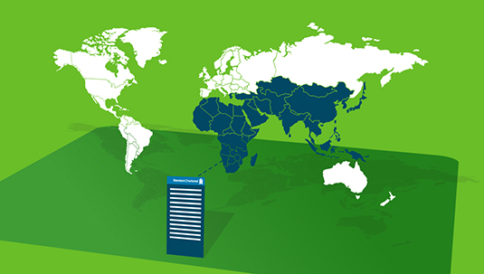

- You are here:
- Home >
- Careers >
- Graduates >
- Fast Track Programme >
- Retail Clients
Retail Clients

Our programme is designed to set you up for success in your first full-time role. What you do and where you go across the breadth of our business is up to you.
What is our retail business?
The retail clients part of our business is dedicated to serving people like you. The Bank does this through the following four areas:
Our retail business is made up of:
- Personal Banking - we provide banking services for 8.3 million Personal & Preferred clients with our largest markets spanning Hong Kong, India, Korea, Malaysia, Singapore, Taiwan and the UAE.
- Priority & International Clients - we provide banking services for the distinct needs of affluent and emerging high net worth individuals.
- Business Clients - we focus on serving the distinct needs of business owners with an aim to provide easy access and simple business banking solutions.
- Integrated Distribution - we deliver the Bank’s products, services, and solutions to our clients through branches, contact centres, digital channels and new business teams.
What would a year on our Fast Track Programme look like?
We’ve designed a 12-month programme that will expose you to a variety of work so you can develop all the necessary skills to be successful at Standard Chartered. This is what you can expect during the year…
- Induction - This is where you'll get to know how Standard Chartered operates in your location. We'll set you up to get started.
- Month 1-2: Branch Operations Experience - Understand the collaboration between branch and operations, the continuous focus on improving productivity, quality and customer service and how to engage in the process design of operations activities to ensure efficiency and maximization of resources.
- Month 3-4: Day 1 Readiness & Regulatory Training - Tailored training to give you deep product knowledge. Timing varies between 4 - 8 weeks depending on local training and the detail of local regulatory requirements.
- Month 5-12: Frontline Experience - This is your hands-on experience of our Retail Clients business. You will be customer facing, learning and honing your skills and sales on the job.
This programme is available in:
- Bahrain
- Bangladesh
- Botswana
- China
- Ghana
- India
- Indonesia
- Kenya
- Malaysia
- Nigeria
- Pakistan
- South Korea
- Singapore
- Taiwan
- Thailand
- UAE
- Uganda
- Zambia
- Zimbabwe
More about the programme
- What sort of work will you be involved in?show/hide
Banking is an exciting and dynamic industry. In your first year you will be given the broadest possible exposure to our business. These are some of the projects and experiences you can expect:
- Cross-selling and working to migrate transactions to electronic/self-service channels
- Managing interactions with customers, striving to deliver exceptional customer service
- Gaining maximum sales exposure across the full portfolio of the Bank's products.
- Building your international networkshow/hide
Joining the Retail Clients Fast Track programme, you’ll become part of an international network.
Your graduate peers will be based across our geographic footprint:
- Indonesia
- Malaysia
- Thailand
- Singapore
- China
- Brunei
- Taiwan
- Korea
- Botswana
- Gambia
- Ghana
- Kenya
- Tanzania
- Uganda
- Zambia
- Zimbabwe
- Bangladesh
- Bahrain
- Jordan
- Oman
- Pakistan
- UAE
- What are the application requirements?show/hide
- An undergraduate degree.
- The legal right to work in the country that you are applying to.
- Business level English (the ability to speak more than one language will be highly regarded).
- Retail Clients in actionshow/hide
Take a look at the links below to find out more about our Retail Clients business and the impact it’s having on the future of banking.
What’s next for banking technology
The digital age has changed the way many of us use our banking services, but with technology constantly evolving, what other innovations can we look forward to in the future?
Making banking personal again
Banking is migrating to digital channels, which raises the question of what’s going to happen to the personal relationship between banks and their customers. In an increasingly digitised world, how do we keep the ‘personal’ in personal banking?
The new emerging market consumer
Emerging market consumers are confident about economic growth, highly optimistic about their personal prosperity, and have clear aspirations for spending their newly created wealth, finds out more about the characteristics that define them.
- Graduate Alumni - what happened next?show/hide
Here are some of the roles our Graduate Alumni took up at the end of their graduate programme:
- Assistant Relationship Manager - Taipei
- Branch Service Manager - Lahore
- Business Clients Relationship Manager - Shanghai
- Advice from some Graduate Alumnishow/hide
Hibah Khan - Fast track graduate - Pakistan
“Banking is a good place to start your career because you get to understand how the economy works”
I was always interested in working in an international organisation and researched several companies including FMCGs when thinking about life after university. Prior to graduating, I interned at Standard Chartered and was really impressed by the friendly working environment.
The fact that the country’s entire economy depends on Banks both directly and indirectly really excited me about the industry. It’s one industry that’s linked to every other industry in the economy; it’s a good place to start your career because you get to understand how the economy works.
I spoke to a Standard Chartered graduate from the previous year and he was really positive about the working environment and workload in general at the Bank. Standard Chartered also has a strong brand presence and reputation in Pakistan.
The Fast Track Programme seemed like a great way to start my career with the Bank. It’s a fantastic chance to interact with a diverse group of people and it enables you to explore different options before settling into a permanent role. I’ve been involved in revising the Branch Operations Manual for Pakistan, running bancassurance campaigns and country wide employee engagement activities.
Catherine Kuyoh - Assistant Relationship Manager Commercial Clients - Kenya
“The diversity of skill sets that are brought under one roof made me pursue a career in banking”
Due to the various event management jobs I had at university I knew my strengths were in customer service and team leadership. I considered various industries after I graduated - hospitality and management as well as financial services.
My father was a banker and he assured me that banking was a great platform to begin my career. I also asked a lot of people I knew for advice on what industry to go in to. They see characteristics in you that you would never identify on your own. The diversity of skill sets that are brought under one roof made me pursue a career in banking. I’m so glad I did, there is never a dull moment and the flexibility to move and learn from other departments is great.
The working culture at Standard Chartered appealed to me the most. The opportunity to work in an international organisation, get exposure to international markets and most of all interact with people form different cultures is what differentiates the Bank.
Being in the programme exposes you to a variety of projects and there’s so much opportunity to learn from different departments. I’ve been involved on the launch of an Islamic Banking project, developing various process flows for the Retail Products team and helping to organise events for the Bank.
What’s next?
Fast track programme
Make an impact on our biggest and most important business areas.